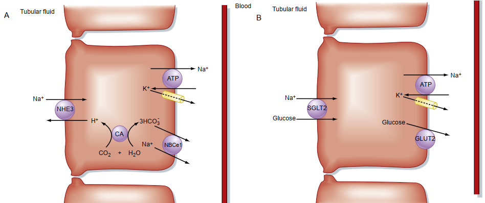
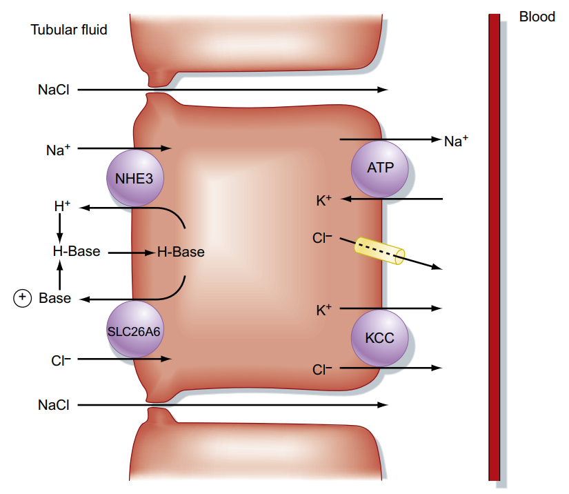
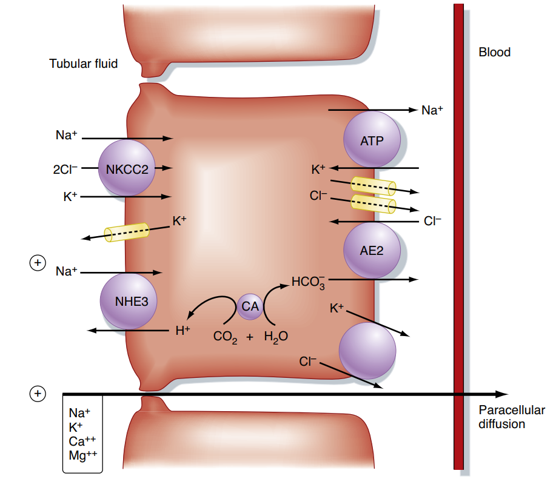
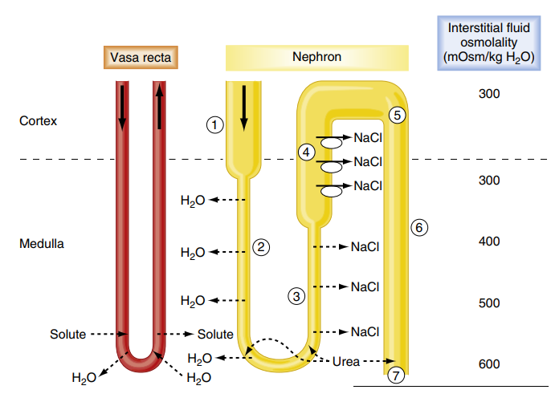
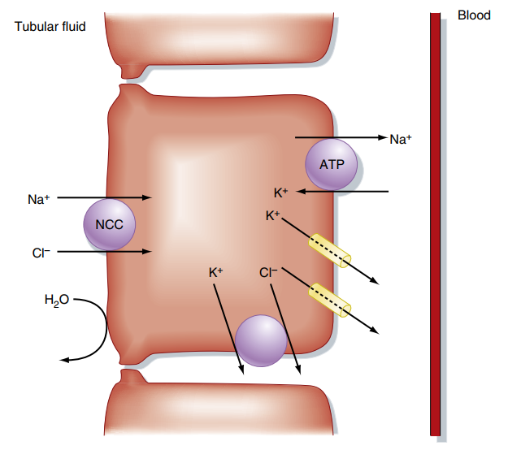
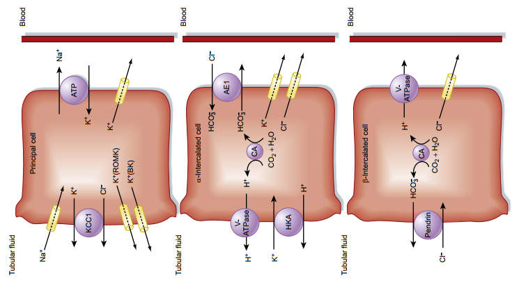
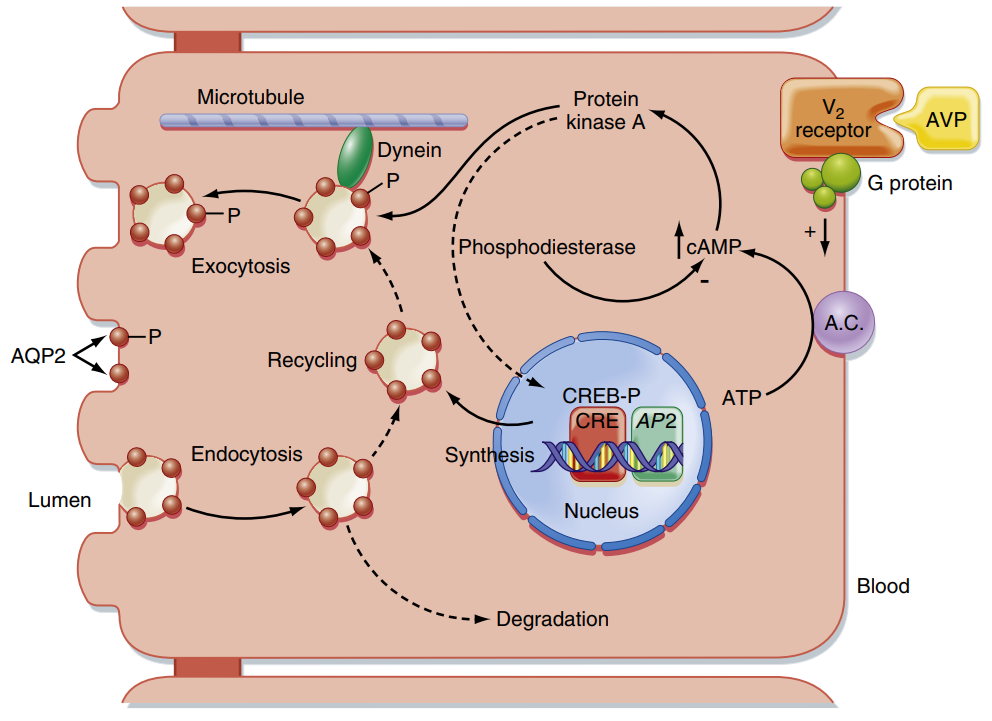

Chức năng Tái hấp thu và Bài tiết tại Ống thận
Hệ thống hóa cơ chế vận chuyển chất điện giải, nước và các chất dinh dưỡng tại từng phân đoạn của ống thận, các cơ chế nhân nồng độ ngược dòng và vai trò của các hormon điều hòa.
Chức năng tạo nước tiểu của thận là một quá trình phức tạp bao gồm ba khâu nối tiếp nhau: lọc tại cầu thận, tái hấp thu tại ống thận và bài tiết tại ống thận. Mặc dù mỗi ngày có khoảng 180 lít dịch được lọc qua cầu thận, nhưng chưa đến 1% lượng dịch này trở thành nước tiểu chính thức. Sự khác biệt khổng lồ này là nhờ vào hoạt động tái hấp thu (vận chuyển chất từ lòng ống thận trở lại máu mao mạch quanh ống) và bài tiết (vận chuyển chất từ máu vào lòng ống thận).
Định luật cân bằng khối lượng xác định lượng chất cuối cùng được thải trừ ra nước tiểu.
Phần I: Ống lượn gần (Proximal Tubule)
Ống lượn gần là nơi chủ yếu diễn ra sự tái hấp thu, đảm nhận việc thu hồi khoảng 65% lượng nước và ion Na+, cùng với 100% các chất dinh dưỡng (glucose, acid amin). Cơ chế biểu mô ở đây rất phát triển với bờ bàn chải rộng làm tăng diện tích tiếp xúc.
Hoạt động tái hấp thu được thúc đẩy bởi bơm
Na+-K+-ATPase ở màng đáy bên. Bơm sử dụng ATP
đẩy 3 Na+ ra dịch kẽ và đưa 2 $K^{+}$ vào tế bào, tạo điện thế âm và nồng độ Na+
thấp nội bào.
Động lực này kéo Na+ từ lòng ống vào tế bào qua màng đỉnh theo cơ chế
đồng vận chuyển tích cực thứ phát qua các kênh SGLT1, SGLT2 (với glucose) và các kênh đồng vận
chuyển acid amin, lactate, phosphate. Sau đó, glucose khuếch tán thuận hóa qua
màng đáy bên vào máu nhờ kênh GLUT2.
HCO3- không thể thấm trực tiếp qua màng đỉnh. Tế bào bài tiết H+ ra
lòng ống qua kênh đối vận chuyển NHE3
(Na+/H+ exchanger). Tại lòng ống, H+ kết
hợp với HCO3- tạo thành H2CO3, phân ly thành $H_2O$ và CO2 nhờ men
Carbonic Anhydrase (CA) ở bờ bàn chải.
CO2 khuếch tán vào tế bào, kết hợp với $H_2O$ nhờ men CA nội bào tạo lại
thành $H^+$ và $HCO_3^-$. $HCO_3^-$ sau đó được đưa vào máu qua kênh đồng vận
chuyển NBC1
(Na+/HCO3-) ở màng đáy bên. Cơ chế
này giúp tái hấp thu gần như toàn bộ HCO3- bị lọc.
Ống lượn gần là nơi bài tiết tích cực các chất thải chuyển hóa nội sinh và các
chất ngoại sinh (bao gồm các loại thuốc điều trị).
Các chất nội sinh như urate, creatinine, acid mật và các chất ngoại sinh như
penicillin, furosemide, salicylates được vận chuyển tích cực từ dịch kẽ vào lòng
ống nhờ hệ thống vận chuyển đặc hiệu qua các kênh OAT (Organic Anion Transporter) và OCT (Organic Cation Transporter).


Phần II: Quai Henle (Loop of Henle)
Quai Henle tái hấp thu khoảng 25% lượng Na+ và 15% lượng nước của dịch lọc. Chức năng quan trọng nhất của quai Henle là thiết lập và duy trì nồng độ ưu trương ở vùng tủy thận, tạo động lực cốt lõi cho sự cô đặc nước tiểu ở ống góp.
Phân đoạn này có đặc tính **thấm nước rất mạnh** thông qua các kênh nước Aquaporin-1 nhưng **hoàn toàn không thấm
các chất tan** (như NaCl, ure).
Khi dịch lọc đi sâu vào vùng tủy thận ưu trương, nước bị rút mạnh ra khoảng kẽ
tủy thận và đi vào mạch vasa recta. Quá trình này làm dịch lọc trong lòng ống bị
cô đặc dần, đạt độ ưu trương cực đại tại đỉnh quai Henle.
Phân đoạn này **hoàn toàn không thấm nước** nhưng có khả năng vận chuyển chất
tan cực kỳ mạnh mẽ.
Na+, $K^{+}$ và $Cl^{-}$ được tái hấp thu tích cực từ lòng ống vào tế bào biểu
mô thông qua kênh đồng vận chuyển NKCC2
(1Na+-1K+-2Cl-) ở màng đỉnh. Sau đó,
$K^{+}$ rò rỉ ngược lại lòng ống qua kênh ROMK, tạo ra điện thế dương trong lòng ống
(+6 đến +8 mV).
Điện thế dương này tạo lực đẩy điện động lực học ép các ion dương hóa trị hai
($Ca^{2+}$, $Mg^{2+}$) tái hấp thu thụ động qua khoảng kẽ giữa các tế bào
(paracellular). Đây là vị trí tác động của thuốc lợi tiểu
quai (như Furosemide) qua việc ức chế NKCC2.


Phần III: Ống lượn xa và Ống góp (Distal Tubule & Collecting Duct)
Đây là đoạn "tinh chỉnh" thành phần nước tiểu cuối cùng trước khi bài xuất ra ngoài. Sự tái hấp thu và bài tiết ở đoạn này chịu sự điều hòa nghiêm ngặt của các hormon nội tiết để đáp ứng với tình trạng thể tích tuần hoàn và áp suất thẩm thấu cơ thể.
Tương tự cành lên quai Henle, đoạn này **hoàn toàn không thấm nước**. Tế bào
biểu mô ở đây tái hấp thu Na+ và $Cl^{-}$ thông qua kênh đồng vận chuyển NCC (Na+-Cl-
symporter) ở màng đỉnh.
Kênh NCC là đích ức chế trực tiếp của nhóm thuốc lợi tiểu
Thiazide. Do liên tục rút muối mà không rút nước, dịch lọc đi qua
đoạn này ngày càng loãng ra (nhược trương).
Chứa hai loại tế bào biệt hóa có chức năng trái ngược nhau:
Tế bào chính (Principal cells): Tái hấp thu Na+ qua kênh ENaC và bài tiết $K^{+}$ qua kênh ROMK. Hormon Aldosterone làm tăng số lượng bơm
$Na^{+}-K^{+}$-ATPase và kênh ENaC, kích thích giữ muối nước, thải $K^{+}$.
Hormon ANP có tác dụng ngược lại, ức chế kênh ENaC
để tăng thải natri.
Tế bào kẽ (Intercalated cells):
• Tế bào kẽ alpha (Type A): Bài tiết tích cực H+ ra nước tiểu
thông qua bơm H+-ATPase và tái
hấp thu HCO3- cùng $K^{+}$ vào máu để điều chỉnh toan huyết.
• Tế bào kẽ beta (Type B): Hoạt động ngược lại, bài tiết HCO3-
vào lòng ống khi cơ thể bị kiềm huyết.
Sự tái hấp thu nước ở ống góp hoàn toàn phụ thuộc vào hormon ADH (Vasopressin).
Khi có ADH, hormon này gắn vào thụ thể V2
ở màng đáy bên, kích hoạt con đường tín hiệu cAMP làm các túi nội bào chứa kênh nước
Aquaporin-2 (AQP2) hòa màng vào màng
đỉnh. Nước trong lòng ống sẽ được rút mạnh vào mô kẽ tủy ưu trương, làm cô đặc
nước tiểu. Thiếu ADH hoặc thụ thể mất chức năng gây ra bệnh đái tháo
nhạt.
Ngoài ra, ADH kích hoạt kênh vận chuyển UT-A1 ở ống góp tủy để tái hấp thu ure,
đóng góp 50% độ ưu trương của tủy thận.



Phần IV: Liên hệ Lâm sàng & Sinh lý bệnh học
Hiểu rõ sinh lý vận chuyển chất tại các đoạn ống thận là chìa khóa để giải thích cơ chế tác dụng của các loại thuốc lợi tiểu cũng như bệnh học các hội chứng rối loạn thăng bằng điện giải và nước.
🩺 Cơ chế tác dụng và phân tầng các nhóm Thuốc lợi tiểu
1. Lợi tiểu quai (Loop Diuretics - vd: Furosemide):
Ức chế trực tiếp kênh NKCC2 ở cành lên dày
quai Henle. Thuốc ngăn chặn tái hấp thu khoảng 25% lượng natri được lọc, dẫn đến tác
dụng lợi tiểu rất mạnh. Đồng thời, do làm mất điện thế dương trong lòng ống, lợi
tiểu quai ngăn chặn tái hấp thu thụ động $Ca^{2+}$ và $Mg^{2+}$, gây tăng thải Canxi
ra nước tiểu (có thể gây sỏi niệu hoặc hạ canxi máu).
2. Lợi tiểu Thiazide:
Ức chế kênh đồng vận chuyển NCC ở đoạn đầu
ống lượn xa. Thuốc ngăn chặn tái hấp thu natri ở đoạn này, có tác dụng lợi tiểu
trung bình. Tuy nhiên, khác với lợi tiểu quai, Thiazide làm **tăng tái hấp thu
Canxi** ở ống lượn xa (qua việc giảm natri nội bào kích hoạt kênh trao đổi Na/Ca ở
màng đáy bên). Vì vậy, Thiazide thường được chỉ định để điều trị tăng huyết áp kèm
loãng xương hoặc ngăn sỏi canxi thận.
3. Lợi tiểu tiết kiệm Kali:
• Các thuốc như Amiloride và Triamterene ức chế trực tiếp kênh ENaC ở tế bào chính.
• Spironolactone và Eplerenone đối kháng thụ thể của Aldosterone.
Do ngăn chặn dòng natri đi vào qua kênh ENaC, các thuốc này làm giảm điện thế âm
trong lòng ống, làm mất lực hút để kéo $K^{+}$ ra ngoài qua kênh ROMK. Kết quả là cơ
thể đào thải natri nhưng giữ lại kali, ngăn chặn nguy cơ hạ kali máu.
🩺 Rối loạn điều hòa nước và bệnh lý Đái tháo nhạt (Diabetes Insipidus)
Đái tháo nhạt là tình trạng cơ thể mất khả năng cô đặc nước tiểu ở ống góp, biểu
hiện bằng tiểu nhiều (polyuria, >3 lít/ngày) và nước tiểu rất loãng (nhược trương).
• Đái tháo nhạt trung ương (Central DI): Tuyến yên bị tổn thương
không thể bài tiết hormon ADH vào máu. Điều trị bằng
cách bổ sung ADH tổng hợp (Desmopressin).
• Đái tháo nhạt do thận (Nephrogenic DI): Thận bài tiết ADH bình
thường nhưng tế bào ống góp kháng lại ADH do đột biến gen thụ thể V2, đột biến gen Aquaporin-2, hoặc do ngộ độc lithium.
Desmopressin không có hiệu quả trong trường hợp này.
Tài liệu tham khảo (AMA Citation style)
- Mai PT, Đặng HAT, Lê QT, Vũ TTQ, Bùi DK. Sinh lý học y khoa. Nhà xuất bản Đại học Quốc gia Thành phố Hồ Chí Minh; 2024.
- Koeppen BM, Stanton BA. Berne and Levy Physiology. 8th ed. Elsevier; 2024.
- Barrett KE, Barman SM, Boitano S, Brooks HL. Ganong's Review of Medical Physiology. 24th ed. McGraw-Hill Medical; 2012.
- Silbernagl S, Despopoulos A. Color Atlas of Physiology. 6th ed. Thieme; 2009.
- Lê QT. Sinh lý Thận YDS 2025. [Video recording]. Bs. Linh O'la Scar; 2025.